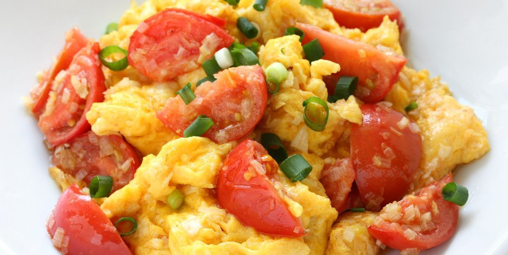
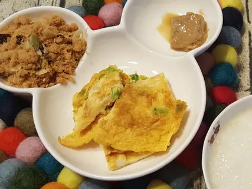

文字+圖片操作 學號:91034124 姓名:王昱茹
| 
| 
| 
| 
|
| 番茄炒蛋 |
苦瓜鹹蛋 |
玉米炒蛋 |
蔥花蛋 |
番茄炒蛋
準備材料
材料:
牛番茄 2個
雞蛋 3個
食用油 2大匙
蔥段 20g
薑末 10g
水 200cc
太白粉水 1大匙
香油 1大匙
| 材料 |
牛番茄 2個 |
雞蛋 3個 |
食用油 2大匙 |
蔥段 20g |
薑末 10g |
水 200cc |
太白粉水 1大匙 |
香油 1大匙 |
牛番茄切片；雞蛋打勻。
取炒鍋，倒入2大匙的油熱鍋後，加入蛋液，用中火炒熟後撈出，備用。
同鍋放入牛番茄、蔥段和薑末，炒至香氣飄出。
拉著倒入200cc的水。
再加入炒熟的雞蛋和所有調味料，以小火燜煮入味。
最後加入太白粉水勾芡後，淋上香油，關火即可盛盤。
苦瓜鹹蛋
準備材料
材料:
苦瓜一顆
鹽15g
鹹蛋2顆
蒜頭5瓣
辣椒一條(要微辣，先泡水)
薑末3g
蔥一根
冰糖5g
油30ml
| 材料 |
苦瓜一顆 |
鹽15g |
鹹蛋2顆 |
蒜頭5瓣 |
辣椒一條(要微辣，先泡水) |
薑末3g |
蔥一根 |
冰糖5g |
油30ml |
冷鍋冷油加熱，中小火熱鍋，放入鹹蛋黃，加熱起泡。
放入苦瓜片拌炒，讓鹹蛋黃均勻黏上苦瓜，不要炒太久，蛋黃會焦。
加入鹹蛋白拌炒後，再加入糖拌炒。
炒透之後一起放入薑蒜及辣椒拌炒。
起鍋前放入蔥拌炒，即大功告成！
玉米炒蛋
準備材料
材料:
罐頭玉米粒 3 大匙
雞蛋 3 個
橄欖油 適量
蒜頭5瓣
鹽 適量
水 2 大匙
| 材料 |
罐頭玉米粒 3 大匙 |
雞蛋 3 個 |
橄欖油 適量 |
鹽 適量 |
水 2 大匙 |
薑末3g |
雞蛋加鹽加冷開水打勻
加入玉米粒拌勻
熱鍋冷油倒入玉米蛋液，隨即加以混拌和炒火力外環小火
視蛋液大部份凝結時即可熄火，以餘温炒至全熟
加了水，炒蛋質地水嫩嫩小火候炒，全熟也不老
玉米炒蛋
準備材料
材料:
罐頭玉米粒 3 大匙
雞蛋 3 個
橄欖油 適量
蒜頭5瓣
鹽 適量
水 2 大匙
| 材料 |
罐頭玉米粒 3 大匙 |
雞蛋 3 個 |
橄欖油 適量 |
鹽 適量 |
水 2 大匙 |
薑末3g |